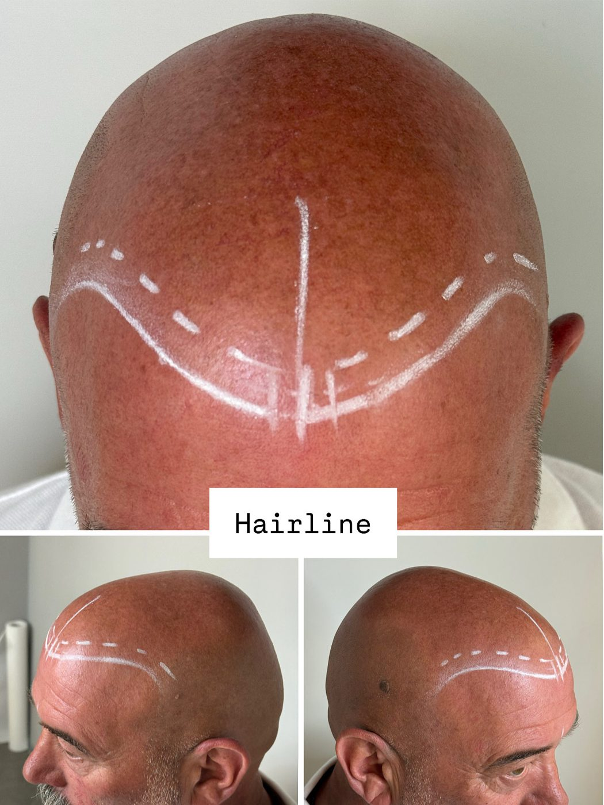
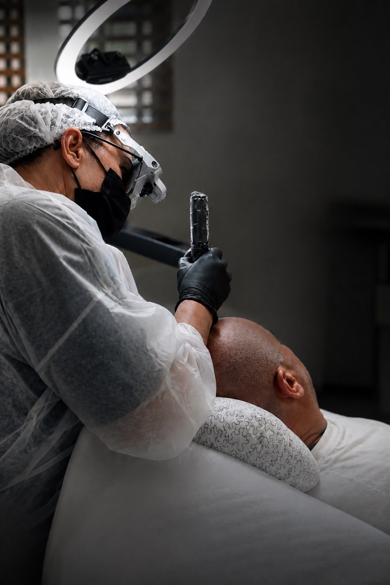

Tricopigmentazione · Dermopigmentazione
AUREALE è il progetto professionale di Simona Reale dedicato alla tricopigmentazione: analisi, progettazione e microdepositi studiati per integrarsi con cute, capelli residui e caratteristiche individuali.
Prenota una consulenzaVedi i risultati
Ogni cuoio capelluto è una mappa diversa. Hairline, zona frontale, midscalp, vertex e tempie non vengono valutati come un'unica superficie: durante la consulenza considero quali aree trattare, come devono dialogare tra loro e quale risultato sia realistico.
Raccolta delle informazioni utili, situazione attuale, obiettivo e condizioni che richiedono rinvio o parere medico.
Hairline, frontal zone, midscalp, vertex/crown, stempiature e punte temporali.
Definizione condivisa di linea frontale, densità, sfumature e transizioni: il progetto viene mostrato prima dell'esecuzione.
Costruzione per gradi, evitando un blocco uniforme e ricercando coerenza con capelli residui, cute e morfologia.
La cute è dinamica: il risultato può richiedere mantenimento o ritocchi.


Dermopigmentista specializzata in tricopigmentazione (Scalp Micropigmentation) e fondatrice di AUREALE. Lavora con il dermografo dal 2008.
Accademia Biotek dal 2008 in trucco permanente e dermopigmentazione. Specializzazione in SMP con Kristian Raine-Thrall, fondatore e lead artist di KRT SMP. Ulteriore formazione con Iryna Onypko, Ylenia Cammareri, Giada Longo e Dermo Academy, Agne Vaiciute, Viktoria Logoida e Dalila Capizzi.
Operatore delle attività di tatuaggio, qualifica regionale. Lo standard formativo della Regione Lazio comprende dermopigmentazione, trucco permanente e protocolli di tricopigmentazione.
Docente di tricopigmentazione presso MB Accademia.
La perdita dei capelli è stata conosciuta da vicino attraverso una persona molto cara: da qui l'attenzione all'ascolto, alla fattibilità e al risultato realistico.
No. Non stimola la crescita e non sostituisce una terapia medica: è un camouflage estetico che agisce sulla percezione visiva di densità e rasatura.
Non viene eseguito in caso di minore età, gravidanza o allattamento, stato di ebbrezza, infezioni o lesioni acute nella zona, febbre, gravi disturbi della coagulazione non controllati, allergia grave documentata ai componenti o chemioterapia senza nulla osta del medico. I farmaci prescritti non vanno sospesi autonomamente.
Nelle prime 48-72 ore possono comparire lieve rossore, sensibilità o prurito: si seguono le istruzioni ricevute ed evitando sudorazione intensa. La protezione UV è importante nel tempo. Arrossamento in peggioramento, gonfiore marcato, dolore crescente, pus o febbre richiedono una valutazione medica.
La cute è dinamica e il pigmento non è un'entità immobile: il risultato può richiedere mantenimento o ritocchi nel tempo.
Ricevo su appuntamento presso studi partner selezionati. Collaboro con vari centri: sono attualmente presente a Roma (zona Flaminio) e a Modena (centro). Contattami direttamente per sapere la sede in cui è possibile raggiungermi.
WhatsApp e telefono: 392 250 4898
Prenota una consulenzaInstagram tricopigmentazione · Instagram dermopigmentazione · TikTok · Facebook